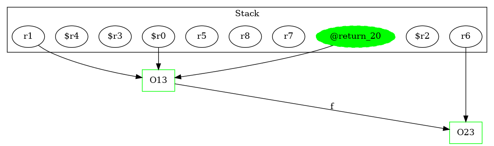

13 : $r0 = new Test1Node
13 : specialinvoke $r0.|Test1Node: void |init|()|()
13 : r1 = $r0
14 : $r2 = new Test1Node
14 : specialinvoke $r2.|Test1Node: void |init|()|()
14 : r7 = $r2
15 : $r3 = new Test1Node
15 : specialinvoke $r3.|Test1Node: void |init|()|()
15 : r7.|Test1Node: Test1Node f| = $r3
16 : $r4 = new Test1Node
16 : specialinvoke $r4.|Test1Node: void |init|()|()
16 : r8 = $r4
17 : staticinvoke |Test1: void bar(Test1Node,Test1Node)|(r1, r8)
18 : r5 = r8.|Test1Node: Test1Node f|
19 : r6 = r1.|Test1Node: Test1Node f|
20 : return r1 ->class soot.jimple.internal.JReturnStmt {getOp: class soot.jimple.internal.JimpleLocal}
